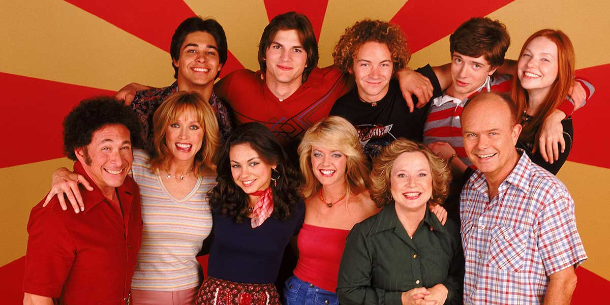
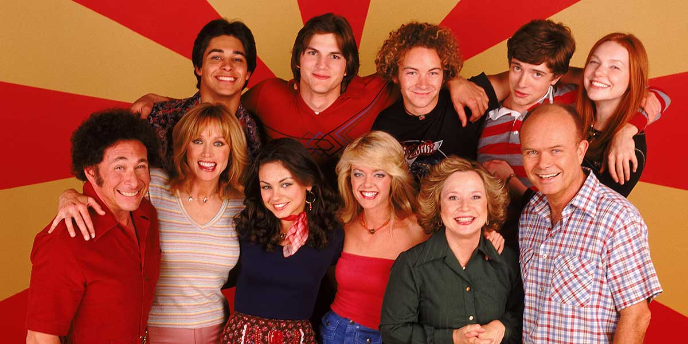

That '70s Show (pt:Que Loucura de Família, br:That '70s Show, nos canais Sony e PlayTV; De Volta aos Anos 70, quando exibida na Rede Bandeirantes) foi uma série de televisão norte-americana exibida entre os anos de 1998 e 2006, contando a história de seis jovens que vivem na cidade fictícia de Point Place, subúrbio de Green Bay, Wisconsin, durante a década de 1970.
A história se passa entre 17 de maio de 1976 e 31 de dezembro de 1979, e relata o dia-a-dia de um grupo de adolescentes (Eric, Donna, Kelso, Jackie, Steven e Fez) na faixa dos 17 anos. Sem ter muito o que fazer, sua rotina se resume a se reunir no porão da casa de Eric para papear, fazer festas, planejar algo, e namorar. O programa durou oito temporadas, e 200 episódios, tornando-a a quarta sitcom mais longa já exibida pela FOX, sua emissora original (sendo as outras três: The Simpsons, King of the Hill and Married with Children). A série também foi responsável pelo estrelato de muitos de seus atores, como Ashton Kutcher, Topher Grace, Mila Kunis e Laura Prepon.
A série mostra acontecimentos dos anos 70, como feminismo, atitudes sexuais, conflitos de gerações, as dificuldades econômicas dos anos 70, a recessão e o uso de drogas. A série também destacou a evolução da indústria do entretenimento, incluindo a televisão, video game, revista Mad e a obsessão de Eric com Star Wars. Tendo início na segunda temporada, a série destacou menos problemas sócio-políticos. Por exemplo, a dinâmica do relacionamento amoroso de Eric e Donna foi alterada em épocas posteriores para se parecer mais com as relações de outros casais "poder" dos dramas adolescentes. Da mesma forma, a primeira temporada contou com um enredo voltado à dramática do fato em que os Formans estavam em perigo de perder sua casa devido ao fato de Red ser demitido da fábrica de autopeças em que trabalhava. As histórias das temporadas seguintes foram mostradas de maneira mais cômica e menos dramática.
